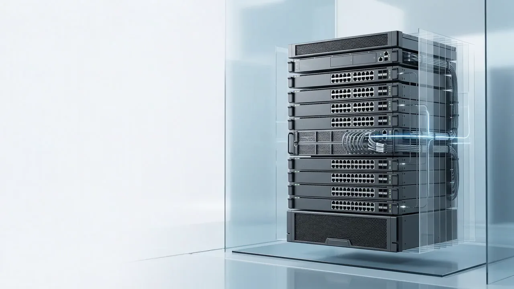

01 — Captured
Physical infrastructure intelligence for data centers
One phone sweep. Verified rack truth.
Inventory, ports, cables, topology, and audit evidence reconciled from physical rack reality.

02 — Extracted
Ports become readable.
Port grids and cable ends move into structured fields.03 — Structured
Evidence gets organized.
Every observation keeps its source frame.04 — Ready
Rack facts are ready.
Enough structure to become a rack model.After the scan
Captured facts. Ready to verify.
The sweep becomes device, position, port, cable, and timestamp evidence.


Device identity
Rack position
Visible ports
Cable observations
Evidence timestamp
Ready for reconciliation
05 — Perceive
Every device. Every rack unit.
A guided sweep separates chassis, ports, labels, and rack-unit position from the physical rack.06 — Cognize
Structured, not guessed.
Switches, patch panels, PDUs, and controllers classify into asset records — no manual transcription.07 — Evidence
Ready for reconciliation.
A continuously reconciled record — inventory, ports, and evidence — from a single phone sweep.08 — Connect
Every cable, mapped.
Visible port usage, cable paths, and link indicators map against the physical rack evidence.09 — Topology
Physical meets logical.
Observations are checked against CDP, LLDP, ARP, and neighbor data from the live network.10 — Verified
Green means verified.
Most paths resolve green. Amber flags a drift or mismatch the moment it appears.11 — Reconcile
Checked against every system.
New scans compare against CMDB, DCIM, asset, and network records automatically.12 — Drift
Drift doesn't hide.
A mismatch surfaces the moment it appears — not at the next audit cycle.13 — Truth
One verified source.
40-60% of enterprise CMDB records drift from physical reality. RackTrack closes that gap continuously.14 — Scale
Start with one rack.
A single verified rack is the first proof point, not the ceiling.15 — Expand
Then the next rack. Then the row.
Each additional rack confirms the same way — visually, then verified.16 — Footprint
Continuous across the floor.
One workflow scales from a single cabinet to the full data center footprint.17 — Outcomes
One model. Every team.
The same verified record powers different workflows for different teams.18 — Focus
From footprint back to detail.
Capacity, connectivity, compliance, procurement, posture, and incidents — all traceable to one rack.19 — Ready